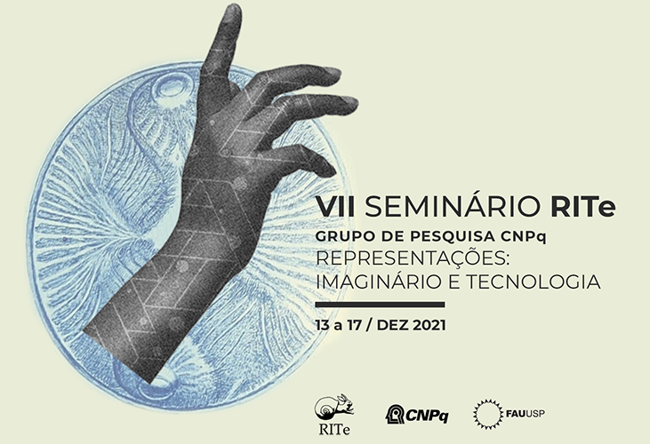
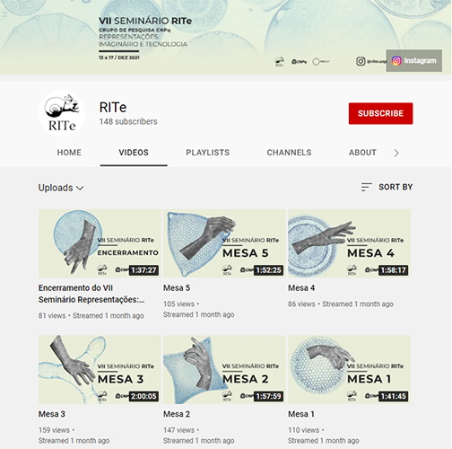

<h̍̇ͫ̅҉̟͙̜̘̙̬>
rite2021 //
Identidade visual para o VII Seminário RITe. Conceito, capas para transmissão no youtube, fundos para transmissão, comunicação em redes sociais, vinhetas. Com Aurélio Fontoura, Carolina Simon, Federica de La Barrera, Jéssica Carvalho, Lorena Avallone, Milena Magoga, Natália Castro.



todo o material deste site é disponibilizado sob a licensa Creative Commons Attribution-ShareAlike 4.0 International